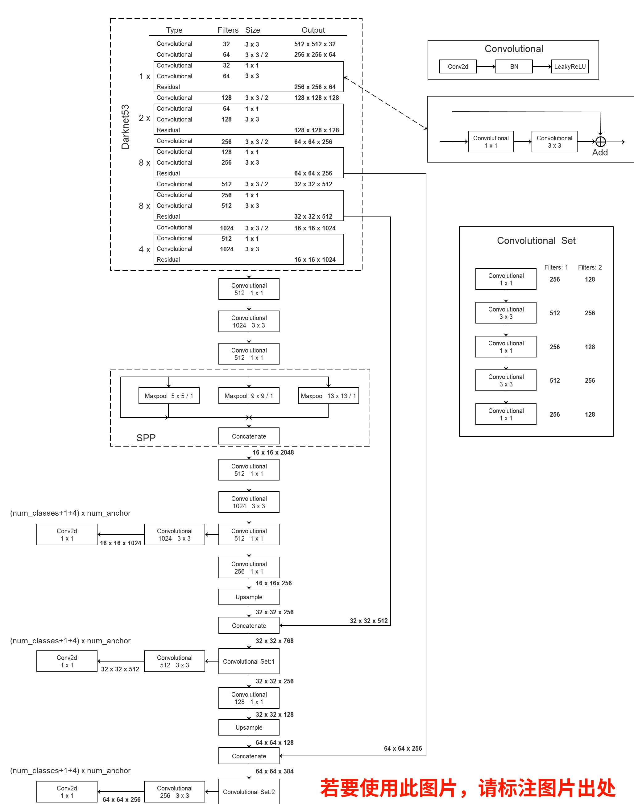

该项目源自 ultralytics/yolov3
pip install pycocotools; pip install pycocotools-windows(不需要额外安装vs))requirements.txt文件 ├── cfg: 配置文件目录 │ ├── hyp.yaml: 训练网络的相关超参数 │ └── yolov3-spp.cfg: yolov3-spp网络结构配置 │ ├── data: 存储训练时数据集相关信息缓存 │ └── pascal_voc_classes.json: pascal voc数据集标签 │ ├── runs: 保存训练过程中生成的所有tensorboard相关文件 ├── utils: 搭建训练网络时使用到的工具 │ ├── datasets.py: 数据读取以及预处理方法 │ ├── img_utils.py: 部分图像处理方法 │ ├── layers.py: 实现的一些基础层结构 │ ├── parse_config.py: 解析yolov3-spp.cfg文件 │ ├── torch_utils.py: 使用pytorch实现的一些工具 │ └── utils.py: 训练网络过程中使用到的一些方法 │ ├── train_utils: 训练验证网络时使用到的工具(包括多GPU训练以及使用cocotools) ├── weights: 所有相关预训练权重(下面会给出百度云的下载地址) ├── model.py: 模型搭建文件 ├── train.py: 针对单GPU或者CPU的用户使用 ├── train_multi_GPU.py: 针对使用多GPU的用户使用 ├── trans_voc2yolo.py: 将voc数据集标注信息(.xml)转为yolo标注格式(.txt) ├── calculate_dataset.py: 1)统计训练集和验证集的数据并生成相应.txt文件 │ 2)创建data.data文件 │ 3)根据yolov3-spp.cfg结合数据集类别数创建my_yolov3.cfg文件 └── predict_test.py: 简易的预测脚本，使用训练好的权重进行预测测试.txt，推荐使用免费开源的标注软件(支持yolo格式)，labelImg.xml格式了也没关系，我写了个voc转yolo格式的转化脚本，下面会讲怎么使用├── my_yolo_dataset 自定义数据集根目录│ ├── train 训练集目录│ │ ├── images 训练集图像目录│ │ └── labels 训练集标签目录 │ └── val 验证集目录│ ├── images 验证集图像目录│ └── labels 验证集标签目录 利用标注好的数据集生成一系列相关准备文件，为了方便我写了个脚本，通过脚本可直接生成。也可参考原作者的 教程
├── data 利用数据集生成的一系列相关准备文件目录│ ├── my_train_data.txt: 该文件里存储的是所有训练图片的路径地址│ ├── my_val_data.txt: 该文件里存储的是所有验证图片的路径地址│ ├── my_data_label.names: 该文件里存储的是所有类别的名称，一个类别对应一行(这里会根据```.json```文件自动生成)│ └── my_data.data: 该文件里记录的是类别数类别信息、train以及valid对应的txt文件将VOC标注数据转为YOLO标注数据(如果你的数据已经是YOLO格式了，可跳过该步骤)
trans_voc2yolo.py脚本进行转换，并在./data/文件夹下生成my_data_label.names标签文件，# voc数据集根目录以及版本voc_root = "./VOCdevkit"voc_version = "VOC2012"# 转换的训练集以及验证集对应txt文件，对应VOCdevkit/VOC2012/ImageSets/Main文件夹下的txt文件train_txt = "train.txt"val_txt = "val.txt"# 转换后的文件保存目录save_file_root = "/home/wz/my_project/my_yolo_dataset"# label标签对应json文件label_json_path = './data/pascal_voc_classes.json'my_data_label.names 标签文件格式如下aeroplanebicyclebirdboatbottlebus...根据摆放好的数据集信息生成一系列相关准备文件
calculate_dataset.py 脚本生成 my_train_data.txt 文件、my_val_data.txt 文件以及 my_data.data 文件，并生成新的 my_yolov3.cfg 文件# 训练集的labels目录路径train_annotation_dir = "/home/wz/my_project/my_yolo_dataset/train/labels"# 验证集的labels目录路径val_annotation_dir = "/home/wz/my_project/my_yolo_dataset/val/labels"# 上一步生成的my_data_label.names文件路径(如果没有该文件，可以自己手动编辑一个txt文档，然后重命名为.names格式即可)classes_label = "./data/my_data_label.names"# 原始yolov3-spp.cfg网络结构配置文件cfg_path = "./cfg/yolov3-spp.cfg"预训练权重下载地址（下载后放入weights文件夹中）：
yolov3-spp-ultralytics-416.pt: 链接: https://pan.baidu.com/s/1cK3USHKxDx-d5dONij52lA 密码: r3vmyolov3-spp-ultralytics-512.pt: 链接: https://pan.baidu.com/s/1k5yeTZZNv8Xqf0uBXnUK-g 密码: e3k1yolov3-spp-ultralytics-608.pt: 链接: https://pan.baidu.com/s/1GI8BA0wxeWMC0cjrC01G7Q 密码: ma3tyolov3spp-voc-512.pth (这是我在视频演示训练中得到的权重): 链接: https://pan.baidu.com/s/1fzXPFYvPy95Q9f5IR5Voqg 密码: ct2n本例程使用的是PASCAL VOC2012数据集
Pascal VOC2012 train/val 数据集下载地址：http://host.robots.ox.ac.uk/pascal/VOC/voc2012/VOCtrainval_11-May-2012.tarpython -m torch.distributed.launch --nproc_per_node=8 --use_env train_multi_GPU.py 指令, nproc_per_node 参数为使用GPU数量如果对 YOLOv3 SPP 网络原理不是很理解可参考 教程 。
